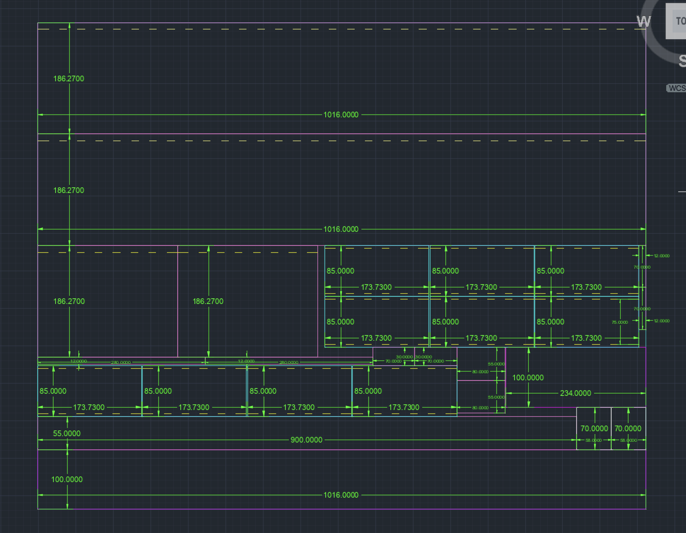

Figure 1: Bending Moment Enveleop of the Bridge

Figure 2: CAD of the Matboard
The final project for my civil engineering course involved designing and building a bridge that could withstand as much dynamic load as possible. To start off, me and my team brainstormed many different design ideas. We tested bridges of various cross sections, heights, and flange thicknesses using a code that would output the expected factor of safety of the bridge. The most optimal design was determined based on the predicted amount of dynamic load that the bridge could withstand, which was based on the envelope generated by the code. A picture of the envelope of our final design is shown in Figure 1. To make sure that we knew how we were going to cut the matboard to make the bridge we designed a CAD shown in Figure 2.
Figure 1: Bending Moment Enveleop of the Bridge
Figure 2: CAD of the Matboard
Building the bridge was very dangerous as one small mess up could affect how the bridge performed. One task that was a lot more difficult than expected was folding the flanges, which is shown in Figure 3. This is because you had to fold a very small part of the matboard, which required a lot of precision as we could not fold the flanges too much. We found that using a ruler to line things up helped a lot. Another thing that took a lot of time was waiting for the glue to dry. It took 15 mins for the glue to dry and only three pieces of matboard could be dried at a time because we only had three timers on us, and we needed a timer to make sure that the glue did not dry for too long. Some of the pieces of matboard being dried are shown in Figure 4.
Figure 3: Folding the Falnges using a Ruler
Figure 4: Me and My Team Waiting for the Glue to Dry
After building the prototype, the only thing left was to test it. A video of the final moments of the bridge is shown in Figure 5. Our bridge performed quite well holding up to 760N before breaking, which I am very happy with as we put in a lot of effort to come up with the final product.
Figure 5: Video of the Performance of The Constructed Bridge